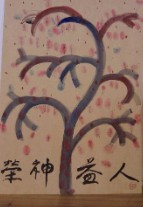

印象深刻的讀經接力
在2018年最後兩天，教會舉辦了讀經接力，將新約全書260章分為10章一組，共26組接力讀經。全教會共有近80人次共襄盛舉。因為適逢四天連假，有不少會友外出或返家，所以留守能參加的人大都參與了，大家很慎重地及早分配演練，正式讀經過程中認真嚴謹、全程錄影，兩組在交接的時候，上一組會為下一組做祝福禱告，讀經完成後每人在生命樹上按下指印並簽名，大家共同建造了榮神益人的生命樹。
其中印象深刻的有：保羅寫的春聯、俊義畫的榮神益人生命樹，緹縈感冒尚未痊癒就參加了至少3棒；學青青少年參加兩組，籃球隊參加3組，最小的兩位是永名和雅雯的兒女鈞安、舒涵；福蘭邀請台中姪兒媳婦海閎與思佳一同參與，聖哲和韻如從新竹攜幼子也來讀；進泰和玉春夫婦在讀經後決定加入本教會，師母的爸爸每天練讀聖經後嘴唇顫動也獲得改善，件件都很激勵人，也成為很好的見證。
這次的接力讀經，凝聚了大家的同心，專注於神的話語，是一次很有意義的跨年活動；展望新的一年，期許大家都能在神的話語上更多深耕，透過每日單獨會主讓神引導，在生活中恩上加恩力上加力！
